Downgrade/Upgrade iOS Đã Khóa Sign (Jailbreak) Trên macOS
SEP 02, 2017
Upgrade một phiên bản iOS thì không hề khó đối với hầu hết người dùng, còn để Downgrade một phiên bản iOS thì chuyện này sẽ ko thể xảy ra một khi Apple đã khóa Sign nó. Tuy nhiên một công cụ có tên Futurerestore aka Prometheus đã được phát hành bởi Hacker @tihmstar, nó giúp bạn có thể Downgrade một phiên bản iOS đã khóa Sign nếu như bạn có SHSH2 Blobs cho phiên bản đó
Vậy công cụ này làm được gì?
- Upgrade/Downgrade bất cứ iOS nào nếu như bạn có SHSH2 Blobs của nó (Trong phạm vi iOS 10)
- Ví dụ Máy mình đang chạy iOS 10.2 giờ mình muốn Downgrade xuống 10.1.1 thì mình xẽ lấy file SHSH2 của 10.1.1 rồi chạy Futurerestore thì xẽ xuống được 10.1.1
LƯU Ý
Cần có SHSH2 blobs phù hợp cho phiên bản cần Downgrade/Upgrade. Nếu như bạn chưa lưu SHSH2 Blobs cho phiên bản của mình thì bạn không thể làm nửa vì Apple đã khóa Sign tất cả iOS từ 10.3.2 trở xuống. Nếu bạn chưa lưu thì xem hướng dẫn này
Công cụ này chỉ hổ trợ macOS và Linux, Windows không được hổ trợ (Bạn có thể cài macOS/Linux trên VMware)
Công cụ này chỉ hoạt động trên các thiết bị 64bit (iPhone 5s trở lên) và sẽ ko hoạt động trên iPhone 7/7 Plus, 8 (kể cả có SHSH2 Blobs)
Khi chạy công cụ này sẽ xóa toàn bộ dữ liệu của bạn. Nên nhớ hãy backup trên iTunes nếu như bạn muốn dữ liệu ko bị mất
Và tất nhiên iDevice của bạn bắt buộc phải JAILBREAK khi sử dụng công cụ này
Futurerestore
Mình sẽ Downgrade iPhone 5S trên iOS 10.2 xuống 10.1.1
1. Chuẩn bị files
1.1 Tạo một Folder tên là Futurerestore. Đây là thư mục bạn để tất cả các files để dễ thuận tiện trong quá trình làm
1.2 Giải nén file futurerestore-latest.zip và copy file futurerestore_macos vào thư mục trên
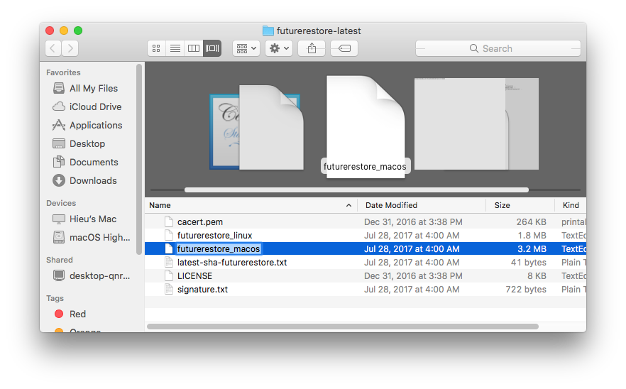1.3 Thêm .zip vào đuôi file iOS 10.3.3
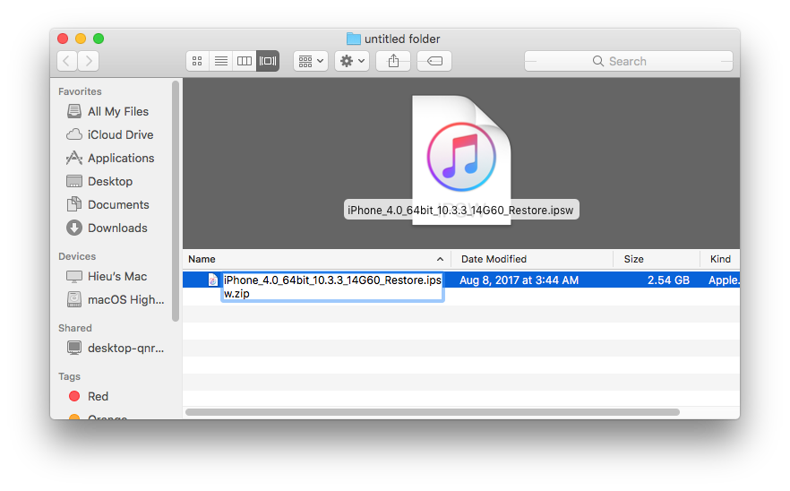1.4 Chọn Use .zip
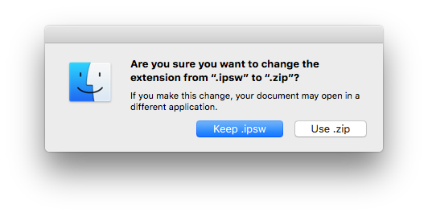1.5 Mở file đó và Copy file BuildManifest.plist vào thư mục Futurerestore
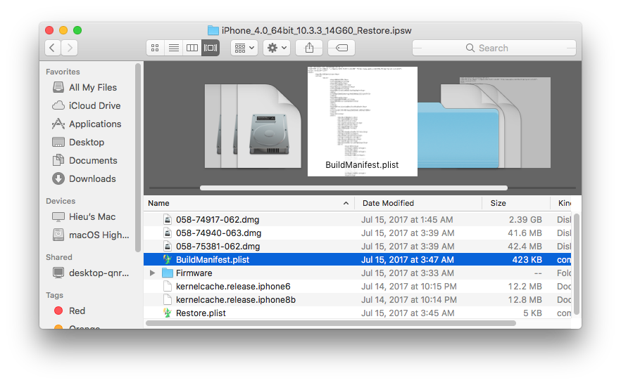1.6 Nhớ số Baseband Version để Copy file baseband
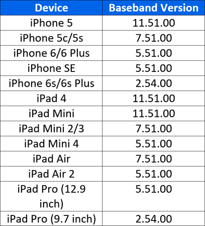1.7 Tiếp tục vào thư mục Firmware và Copy file baseband của bạn có đuôi là .bbfw vào thư mục Futurerestore. Chọn số phiên bản baseband gần nhất với baseband version ở bước 1.6. Baseband version của mình là 7.51.00 vậy mình chọn file Mav7Mav8-7.60.00.bbfw
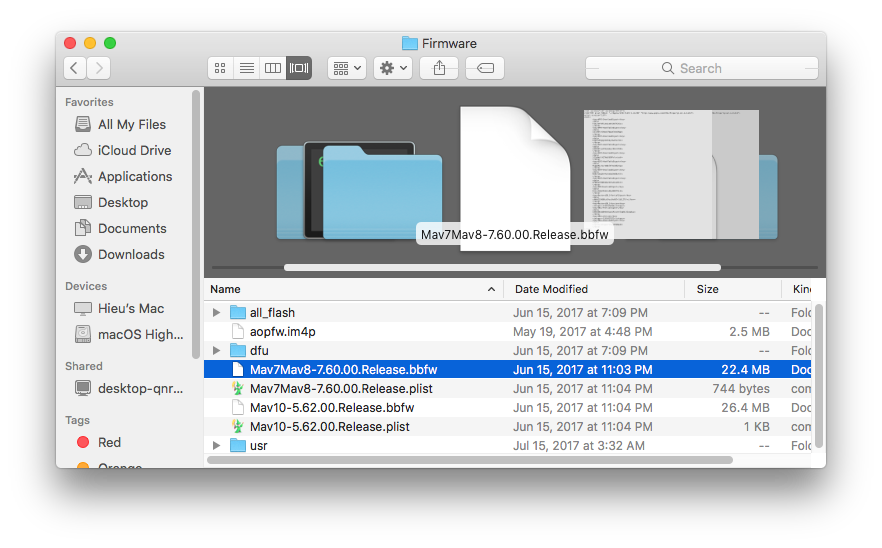1.8 Trên điện thoại tải Battery Memory System Status Monitor về. Mở ứng dụng và chọn phần System ngay trên cùng, bạn sẽ thấy Device Model của bạn
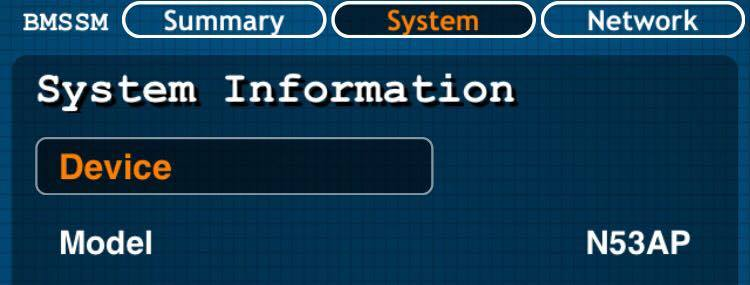1.9 Tiếp tục vào thư mục all_flash, kéo xuống dưới cùng sẽ thấy một loạt file có tên là sep-firmware, Copy file sep có đuôi .imp4 trùng với Device model của bạn ở bước 1.8 vào thư mục Futurerestore. Ví dụ Device Model của mình là N53AP thì mình sẽ chọn file sep-firmware.n53ap.RELEASE.imp4
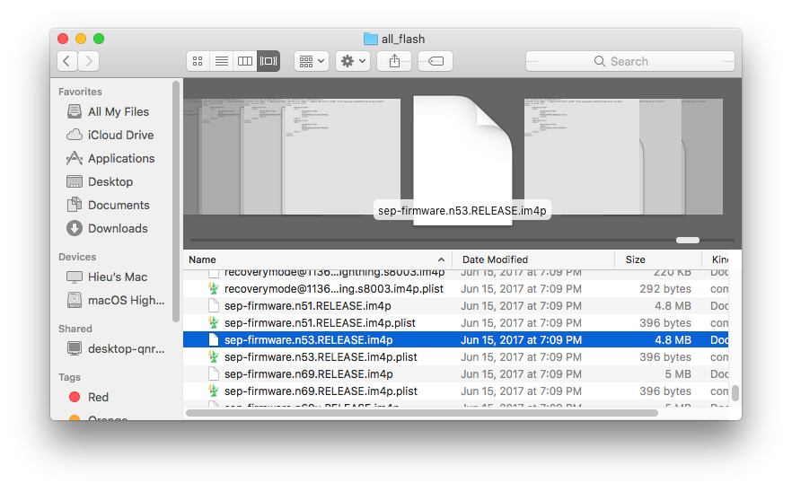1.10 Nếu bạn lưu SHSH2 Blob ở bài này thì unzip và chọn thư mục iOS bạn muốn Upgrade/Downgrade. Mở thư mục noapnonce và copy file có đuôi .shsh2 vào thư mục Futurerestore. Nếu của bạn có hơn 2 files như trong hình thì chọn đuôi file SHSH2 trùng với đuôi file iOS bạn muốn Upgrade/Downgrade.Ví dụ đuôi file iOS của mình là ...14B150_Restore.ipsw thì mình chọn đuôi file SHSH2 trùng với đuôi file này
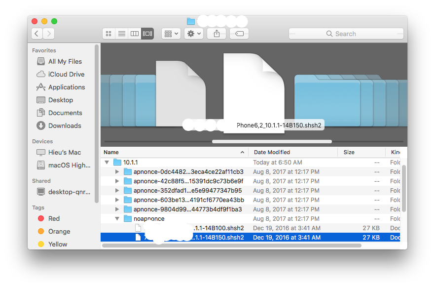1.11 Đây là tất cả những gì bạn cần. Những file .zip nãy bạn có thể xóa đi cho đỡ rối
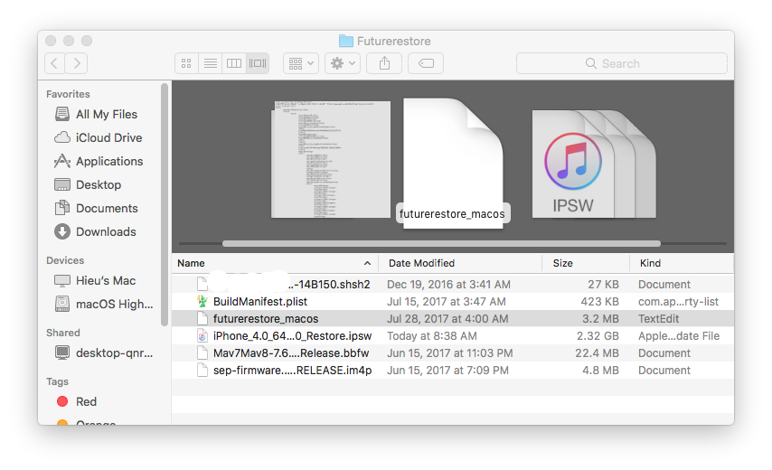1.11 Mở file SHSH2 của bạn vào kéo xuống dưới cùng bạn sẽ thấy dòng <string>0x.....................</string>. Bây giờ mở điện thoại bạn lên vào Cydia tiềm kiếm Mterminal và cài đặt.
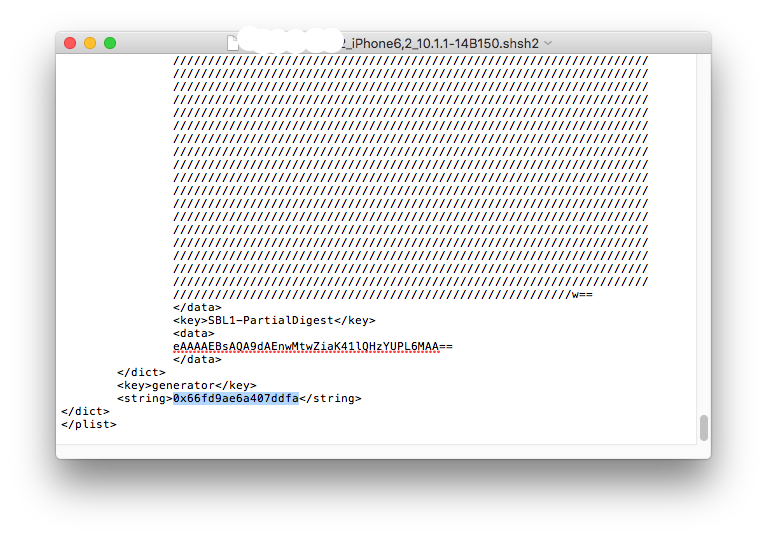1.12 Mở Mterminal trên điện thoại và gõ
Hieus-iphone:~ mobile$ su
password: alpine
Hieus-iphone:/var/mobile root# nvram com.apple.System.boot-nonce=0x.....' Ví dụ máy mình có key là 0x66fd9ae6a407ddfa thì sẽ là nvram com.apple.System.boot-nonce=0x66fd9ae6a407ddfa
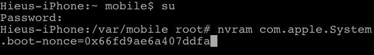Gõ nvram -p để check lại
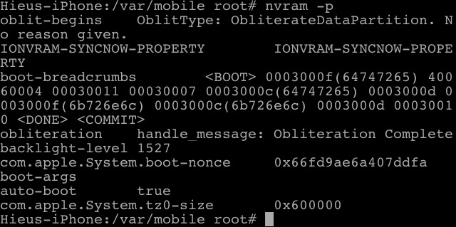1.13 Quay lại trên máy tính, mở terminal và cd vào thư mục Futurerestore gõ
chmod 777 futurerestore_macosSau khi cấp quyền 777 thì icon futurerestore sẽ đổi sang dạng executable

2. Bắt đầu Downgrade/Upgrade
2.1 Tiếp tục ở terminal gõ
./futurerestore_macosNếu hiện không hiện đúng như hình thì check lại bước 1.13
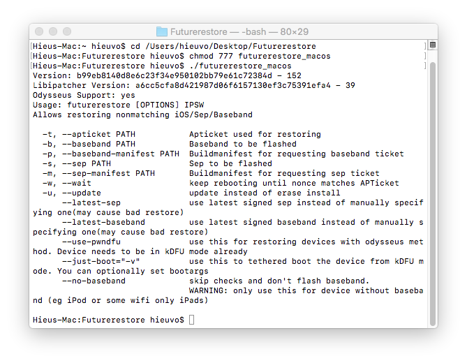2.2 Kiểm tra lại dây cáp có lõng không nếu có thì đổi lấy dây khác nhé. Trên terminal gõ và nhấn enter
./futurerestore_macos -t <iOS SHSH2 blob> -b <Baseband file> -p BuildManifest.plist -s <SEP file> -m BuildManifest.plist -w <iOS IPSW File>(dấu "<>" là tên file của bạn). Ví dụ của mình là: ./futurerestore_macos -t 00000000_iPhone6,2_10.1.1-14B150.shsh2 -b Mav7Mav8-7.60.00.Release.bbfw -p BuildManifest.plist -s sep-firmware.n53.RELEASE.im4p -m BuildManifest.plist -w iPhone_4.0_64bit_10.1.1_14B150_Restore.ipsw
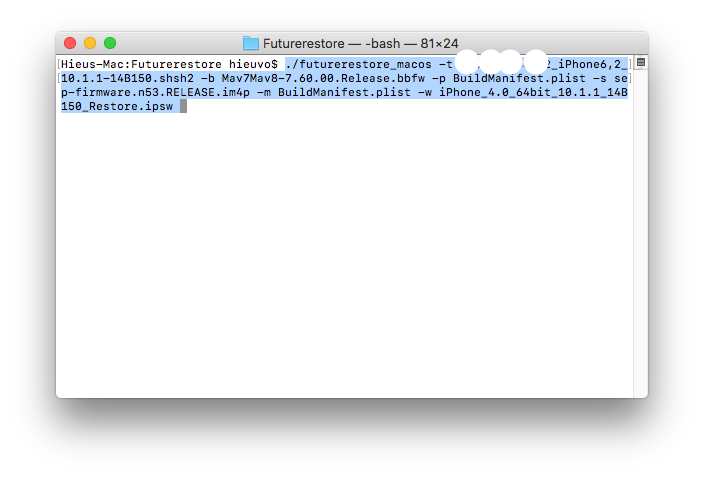Máy lúc này đang vào recovery mode
Giải nén file hệ thống trong ipsw
Lúc này màn hình điện thoại của bạn sẽ hiện màu xanh. Nếu màn hình bạn không hiện màu xanh sẽ có errorcode .Có nghĩa là bạn đã gõ sai key ở bước 1.11
Lúc này đã hiện trên điện thoại đã hiện táo và thanh restore
Terminal báo Done: restoring succeeded thì có nghĩa là thành công rồi, bạn rút cáp ra để cho máy chạy rồi setup thôi
Thành quả
Terminal log